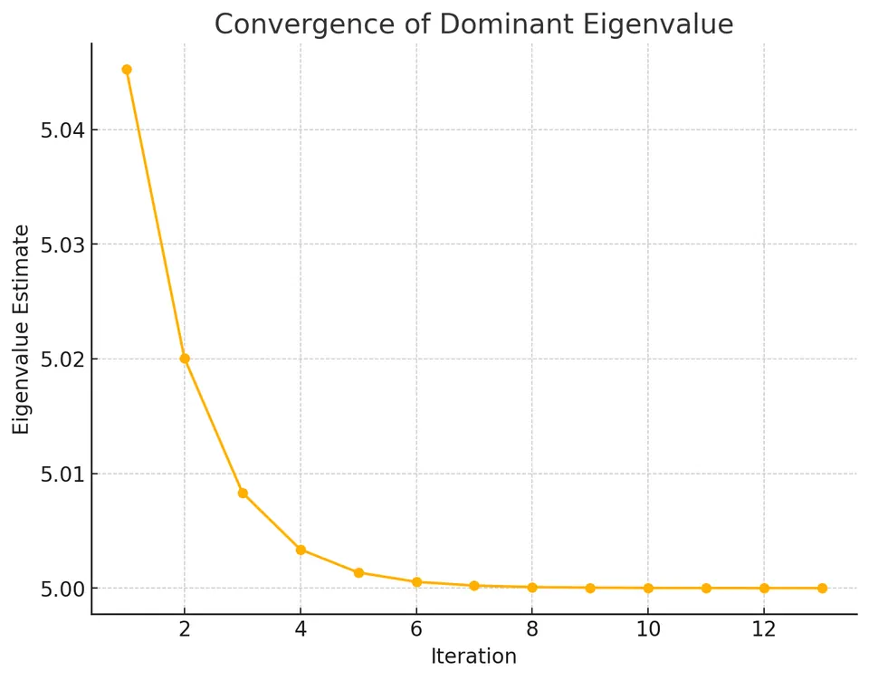

Power Method
The power method estimates an eigenvalue of largest magnitude and its associated eigendirection by repeatedly multiplying a vector by a matrix and normalizing the result. Each multiplication strengthens the contribution from a strictly dominant eigenvalue relative to smaller ones. For the eigenbasis argument below, the matrix is diagonalizable and the initial vector must have a nonzero component in the dominant direction. A wide magnitude gap makes this separation fast; a small gap makes it slow. Because the main operation is a matrix-vector product, the method is useful for large sparse matrices when only one eigenpair is needed. It avoids forming a characteristic polynomial or computing a full decomposition, while normalization controls the growth or decay of the vector's length.

- The power method iteratively refines a vector to approximate the eigenvector associated with the dominant eigenvalue.
- It is particularly efficient for large and sparse matrices since it only requires matrix-vector multiplications.
- Convergence is ensured when the largest eigenvalue in magnitude is unique and well-separated from the next largest.
- The method starts with an initial guess vector, which is repeatedly multiplied by the matrix to approach the dominant eigenvector.
- Normalization of the vector at each step prevents numerical overflow or underflow during the iterations.
- The rate of convergence depends on the ratio between the dominant eigenvalue and the second-largest eigenvalue in magnitude.
- The power method can be extended to find multiple eigenvalues by deflating the matrix after each dominant eigenvalue is found.
- It is widely used in applications such as Google's PageRank algorithm to determine the importance of web pages.
Mathematical formulation
Given an $n \times n$ matrix $A$ and an initial guess $x^{(0)}$, the power method iterates as follows:
I. Compute:
$$ y^{(k)} = A x^{(k)} $$
II. Normalize:
$$ x^{(k+1)} = \frac{y^{(k)}}{\|y^{(k)}\|} $$
These steps are repeated until convergence. Convergence occurs when the vector $x^{(k)}$ no longer changes significantly between iterations while successive eigenvalue estimates often stabilize as well. These are distinct checks, and neither alone is as informative as the eigenpair residual described below.
Inverse power method for the smallest eigenvalue
If we are interested in the eigenvalue of $A$ with the smallest magnitude, we can use the inverse power method. For invertible $A$, the eigenvalues of $A^{-1}$ are the reciprocals of the eigenvalues of $A$ (with the same eigenvectors). Thus, applying the power method to $A^{-1}$ instead of $A$ yields the eigenvector of the eigenvalue of $A$ with the smallest magnitude, and the reciprocal of the dominant eigenvalue of $A^{-1}$ gives that eigenvalue. In practice $A^{-1}$ is never formed; each step solves $A y^{(k)} = x^{(k)}$.
With a shift $\sigma$, the same idea applied to $(A - \sigma I)^{-1}$, whose eigenvalues are $1/(\lambda_i - \sigma)$, finds the eigenvalue of $A$ closest to $\sigma$. Each step solves
$$ (A - \sigma I)\, y^{(k)} = x^{(k)}, \qquad x^{(k+1)} = \frac{y^{(k)}}{\|y^{(k)}\|}, $$
and the eigenvalue is estimated by the Rayleigh quotient $x^{(k+1)T} A\, x^{(k+1)}$ (or $\sigma + 1/\mu$, where $\mu$ is the dominant eigenvalue estimate of $(A - \sigma I)^{-1}$). The error shrinks by a factor of about
$$ \frac{|\lambda_{\text{closest}} - \sigma|}{|\lambda_{\text{next}} - \sigma|} $$
per iteration, where $\lambda_{\text{next}}$ is the second-closest eigenvalue to $\sigma$. Choosing $\sigma$ close to an isolated target eigenvalue can therefore give very fast convergence. A shift equally far from two eigenvalues removes the strict dominance needed by the standard convergence argument; convergence to one eigendirection is then not guaranteed. The shift must not equal an eigenvalue exactly, since $A - \sigma I$ would then be singular.
Derivation
Suppose $A$ has distinct eigenvalues $\lambda_1, \lambda_2, \dots, \lambda_n$ arranged so that:
$$ |\lambda_1| > |\lambda_2| \geq \cdots \geq |\lambda_n|. $$
Let $v_1, v_2, \dots, v_n$ be the corresponding eigenvectors forming a basis. Any initial vector $x^{(0)}$ can be written as:
$$ x^{(0)} = c_1 v_1 + c_2 v_2 + \cdots + c_n v_n, \quad \text{with } c_1 \neq 0. $$
Applying $A$ repeatedly:
$$ A x^{(0)} = c_1 \lambda_1 v_1 + c_2 \lambda_2 v_2 + \cdots + c_n \lambda_n v_n. $$
After $k$ iterations:
$$ A^k x^{(0)} = c_1 \lambda_1^k v_1 + c_2 \lambda_2^k v_2 + \cdots + c_n \lambda_n^k v_n. $$
As $k \to \infty$, because $|\lambda_1| > |\lambda_j|$ for $j > 1$, the terms involving $\lambda_j^k$ vanish in comparison to $\lambda_1^k$. Therefore:
$$ \frac{A^k x^{(0)}}{\|A^k x^{(0)}\|} \approx \frac{c_1\lambda_1^k}{|c_1\lambda_1^k|}\frac{v_1}{\|v_1\|} $$
and the Rayleigh quotient $\frac{x^{(k)T} A x^{(k)}}{x^{(k)T} x^{(k)}}$ tends to $\lambda_1$.
Thus, under the stated assumptions, the power method approaches the dominant eigendirection $v_1$, up to sign or phase, and its Rayleigh quotient approaches $\lambda_1$. The distinction between vector convergence and direction convergence matters for the stopping test.
Direction, convergence factor, and stopping
Dividing the eigenbasis expansion by $\lambda_1^k$ leaves terms proportional to $(\lambda_j/\lambda_1)^k$. The asymptotic direction-error factor is therefore $|\lambda_2/\lambda_1|$, assuming the relevant coefficients are nonzero. A strict gap is enough for the standard convergence argument; a wide gap makes convergence fast.
Normalization fixes the vector length but not its sign or phase. If $\lambda_1<0$, successive real vectors can alternate between opposite signs while their eigendirection converges. A sign-aware comparison is $\min(\|x^{(k+1)}-x^{(k)}\|,\|x^{(k+1)}+x^{(k)}\|)$. In either real or complex arithmetic, a more direct check is
$$ \widehat\lambda_k=\frac{(x^{(k)})^*Ax^{(k)}}{(x^{(k)})^*x^{(k)}},\qquad r_k=Ax^{(k)}-\widehat\lambda_kx^{(k)}. $$
Use a suitably scaled norm of $r_k$ as the stopping measure. If $Ax^{(k)}=0$, normalization is undefined; the current nonzero vector is a zero-eigenvalue eigenvector, but it does not establish that zero is dominant. Handle this case explicitly.
A small eigenpair residual measures satisfaction of the equation. For a normal matrix it also bounds distance to the spectrum after division by $\|x^{(k)}\|_2$; a nonnormal matrix can be more sensitive. For inverse iteration with a fixed shift, factor $A-\sigma I$ once and reuse triangular solves instead of explicitly inverting it.
Algorithm steps
Step 1: Initialize. Choose an initial vector $x^{(0)}$ (random or based on domain knowledge).
Step 2: Iterative step. For $k=0,1,2,\dots$:
- Compute $y^{(k)} = A x^{(k)}$.
- Normalize $x^{(k+1)} = \frac{y^{(k)}}{\|y^{(k)}\|}$.
Step 3: Convergence check. Stop when $\|x^{(k+1)} - x^{(k)}\|$ is sufficiently small, or when changes in the estimated eigenvalue become negligible.
Step 4: Eigenvalue approximation. Once converged, estimate the dominant eigenvalue as:
$$ \lambda_{\text{max}} \approx \frac{x^{(k)T} A x^{(k)}}{x^{(k)T} x^{(k)}}. $$
Example
Consider:
$$ A = \begin{bmatrix}2 & 1 \\ 1 & 3\end{bmatrix}, \quad x^{(0)} = \begin{bmatrix}1 \\ 1\end{bmatrix}. $$
First iteration:
$$ y^{(0)} = A x^{(0)} = \begin{bmatrix}2 & 1 \\ 1 & 3\end{bmatrix}\begin{bmatrix}1 \\ 1\end{bmatrix} = \begin{bmatrix}3 \\ 4\end{bmatrix}. $$
Normalize:
$$ x^{(1)} = \frac{1}{5}\begin{bmatrix}3 \\ 4\end{bmatrix} = \begin{bmatrix}0.6 \\ 0.8\end{bmatrix}. $$
Second iteration:
$$ y^{(1)} = A x^{(1)} = \begin{bmatrix}2 & 1 \\ 1 & 3\end{bmatrix}\begin{bmatrix}0.6 \\ 0.8\end{bmatrix} = \begin{bmatrix}2.0 \\ 3.0\end{bmatrix}. $$
Normalize:
$$ x^{(2)} = \frac{1}{\sqrt{2^2 + 3^2}}\begin{bmatrix}2 \\ 3\end{bmatrix} = \begin{bmatrix}0.5547 \\ 0.8321\end{bmatrix}. $$
Repeating these steps, $x^{(k)}$ converges to the eigenvector associated with the largest eigenvalue, which in this case is $\frac{5 + \sqrt{5}}{2} \approx 3.6180$. The corresponding eigenvector stabilizes around:
$$ \begin{bmatrix}0.5257 \\ 0.8507\end{bmatrix} $$
Advantages
- The algorithm is straightforward to implement, making it accessible for various applications.
- It is beneficial for large and sparse matrices since it only requires matrix-vector multiplication.
- The method maintains a low memory footprint by only storing the current vector and its transformation.
Limitations
- The power method can find only the largest eigenvalue in magnitude (the eigenvalue of smallest magnitude, or the one closest to a shift, requires the inverse power method), not all eigenvalues.
- Convergence may be slow if the magnitudes of the first and second eigenvalues are close.
- The method requires a unique largest eigenvalue to ensure convergence to a single eigenvector; if the dominant eigenvalues form a complex conjugate pair (or $\lambda_1 = -\lambda_2$), the iteration does not converge.
- The starting vector must have a non-zero component along the dominant eigenvector ($c_1 \neq 0$); in floating point, rounding errors usually restore such a component anyway.